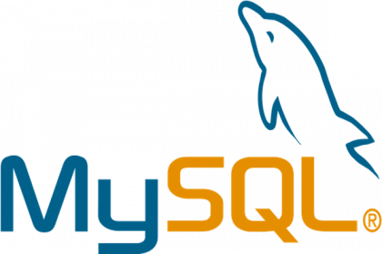
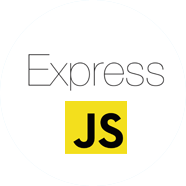

Áreas en las que me desempeño

JavaScript
Desarrollo Frontend y Backend con JavaScript, creando aplicaciones dinámicas e interactivas.

React
Creación de interfaces de usuario interactivas y eficientes con React.

React Native
Creación de interfaces de usuario interactivas y eficientes con React.

Node.js
Desarrollo de servidores y aplicaciones en el backend utilizando Node.js.

MongoDB
Gestión de bases de datos NoSQL con MongoDB.

MySQL
Desarrollo de bases de datos relacionales con MySQL.

Express
Desarrollo de aplicaciones backend con Express.js.
Quality Assensure
Pruebas de calidad y automatización para asegurar el rendimiento y la estabilidad de las aplicaciones.